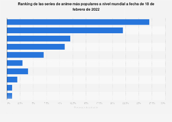

Explicacion de dragon ball z
¿Dragon ball z es el mejor anime?
Esta estadística muestra el ranking mundial de las series de anime más populares de la historia. A fecha de 18 de febrero de 2022, Naruto era la serie que contaba con mayor popularidad entre la población. De hecho, un 27% de los encuestados la señaló como su serie de anime japonés favorita.
Te mostrare el ranking de los animes mas vistos.
¿Por que ver dragon ball z es bueno?
Aunque Dragon Ball parece una serie convencional del héroe que lucha contra el mal, dos elementos le dan un valor agregado que me parece son la clave de su éxito; la diversidad de sus personajes y la las temáticas de integración y subjetividad del bien y el mal que propone la serie.
10 razones de por que ven dragon ball z
- Porque no importa cuánto hayamos crecido, siempre que nos sentamos frente al televisor a ver "Dragon Ball", nos sentimos niños otra vez.
- Y porque, así como nosotros, Gokú ha pasado ya por tantas etapas, pero sigue siendo un tipo genial.
- Porque no importa cuál sea el destino ni cuán lejano este, todos sabemos que el mejor transporte es siempre una nube voladora.
- Porque, así como Gokú, si nos dan a elegir nosotros también preferimos por sobre todas las cosas comer...
- Porque aunque "Dragon Ball" nos presenta a personajes casi invencibles, ellos también tiene sus puntos débiles.
- Porque así como las grandes amistades son las que conociste en tu niñez.
- Porque los mejores villanos están en "Dragon Ball".
- Pero también los héroes más fuertes.
- Y porque, así como Gokú, tú también quisiste encontrar la séptima Esfera del Dragón.
- Y porque aunque no hayas aprendido ni un solo paso de baile, sabes bien cada movimiento para hacer el Kamehameha...